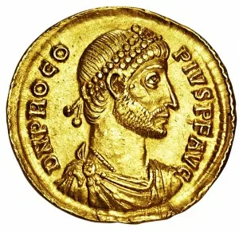
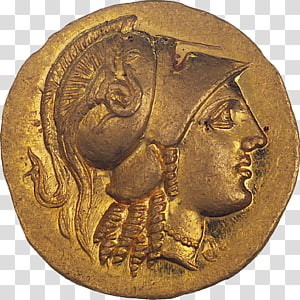
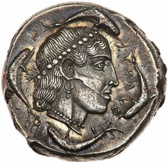
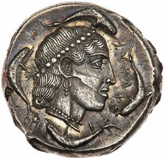
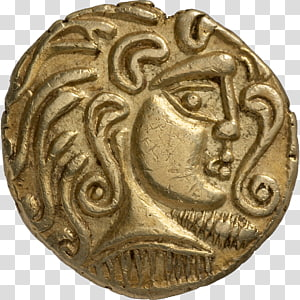
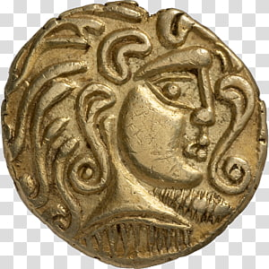

Цинковые монеты — чистка, хранение
Конечно, цинковые монеты не совсем лучшие для понятий коллекционными монетами. Цинковые монеты в основном встречаются среди меньших номиналов. В истории Германии они неоднократно появлялись среди копеек. В качестве...
 

 
